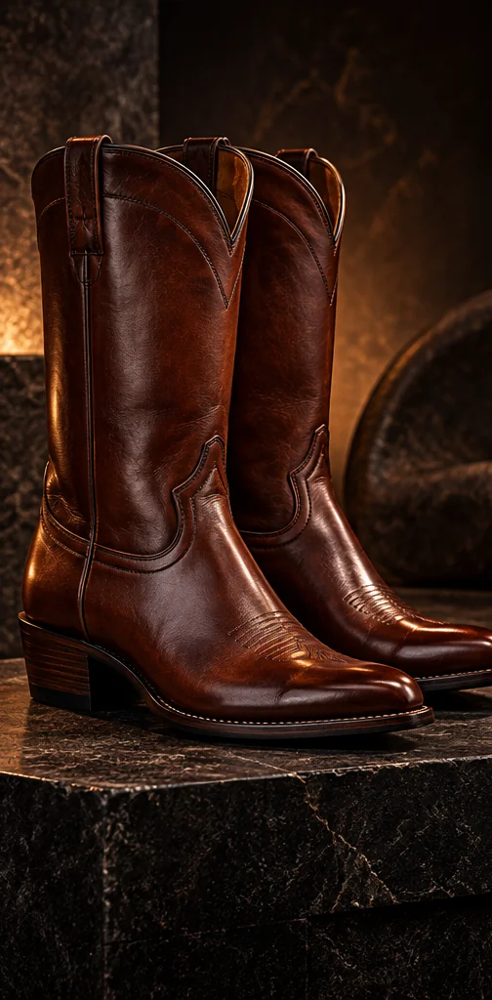
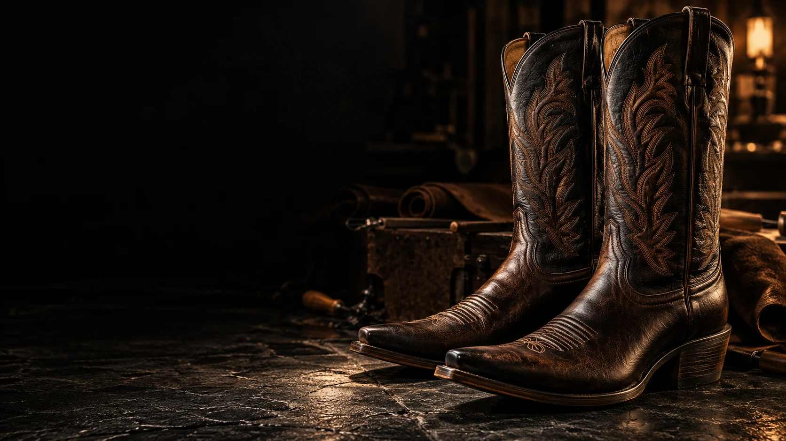
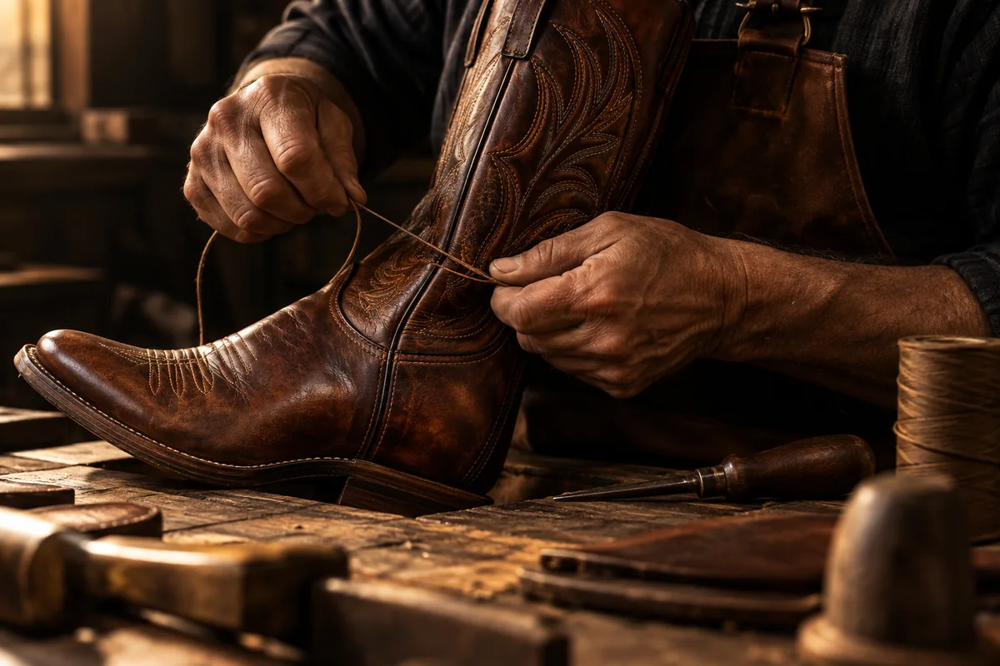
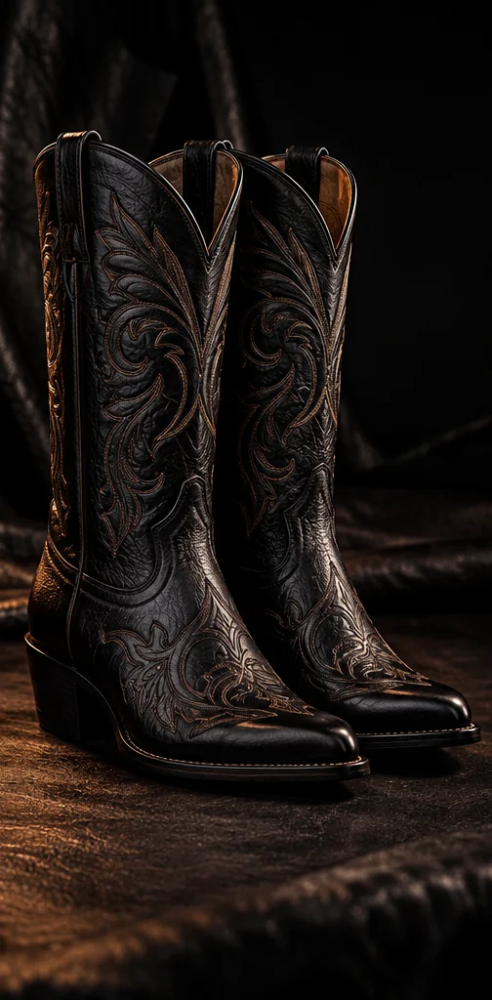
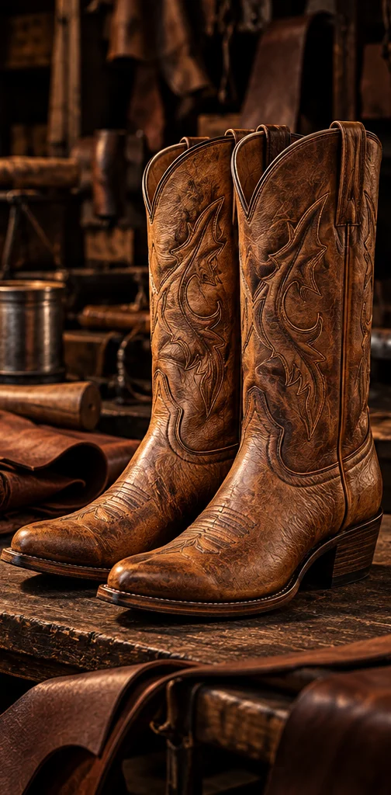

01 / CLÁSICA
CLÁSICA
Elegancia que trasciende el tiempo.

HECHO EN LEÓN, GUANAJUATO
CAVA
Más de 50 años transformando la tradición artesanal en calzado extraordinario.
DESCUBRE CAVA
NUESTRA HISTORIA / 01
El verdadero lujo se reconoce en los detalles que perduran.
Desde León, Guanajuato, honramos el arte de transformar la piel en piezas que trascienden generaciones. Cada par de botas CAVA representa nuestra pasión por la calidad, la tradición y los detalles que hacen extraordinario cada paso.
NUESTRAS CREACIONES / 02
Tres expresiones de un mismo legado. Piel, carácter y distinción en cada detalle.

Elegancia que trasciende el tiempo.

Carácter, tradición y autenticidad.

Detalles que cuentan una historia.
LA CALIDAD NO ES UNA MODA. ES UN LEGADO.
CONVERSEMOS / 03
Conoce nuestra historia, descubre nuestras creaciones y forma parte del legado CAVA.